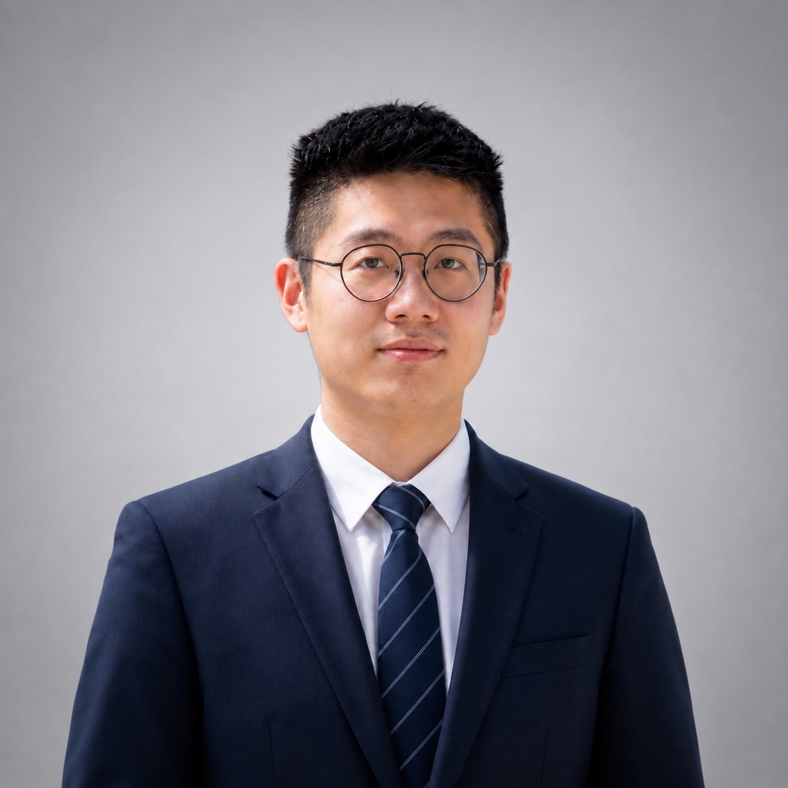

Ph.D. in Mechanical Engineering
Texas A&M University · GPA 3.80/4.00
Researcher · Engineer · Educator
Ph.D. researcher in computational and experimental biomechanics, studying how bone structure, composition, and mechanics interact across scales.
Department of Mechanical Engineering · Texas A&M University

Research profile
I integrate full-field experiments, 3D imaging, image-based finite element analysis, scientific machine learning, and biomaterials characterization to understand multiscale bone mechanics and regeneration.
Training
Texas A&M University · GPA 3.80/4.00
University of Texas at Dallas · GPA 3.97/4.00
Experience
Advisor: Prof. Yuxiao Zhou · Computational and experimental biomechanics
Nano-Thermal Bioengineering Lab · Advisor: Prof. Zhenpeng Qin
Solid Mechanics · Recitations, office hours, quizzes, and exam development
Recent work
H. Fan et al. · Acta Biomaterialia, 2026 · DOI
H. Fan et al. · Cell Biomaterials, 2026 · DOI
H. Fan et al. · Bone, 2025 · DOI
H. Fan et al. · Extreme Mechanics Letters, 2025 · DOI
H. Fan, Q. Cai, Z. Qin · Journal of Biomechanical Engineering, 2023 · DOI
Recognition
Methods
Python, MATLAB, PyTorch, C++
Abaqus, FEA, CFD, micro-CT, DVC, confocal imaging, Avizo, ImageJ
Mechanical testing, AFM, Raman, AFM-IR, SEM, immunohistology, cell culture